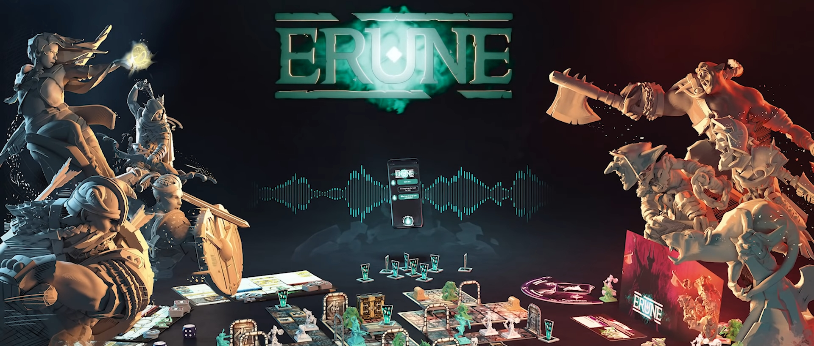
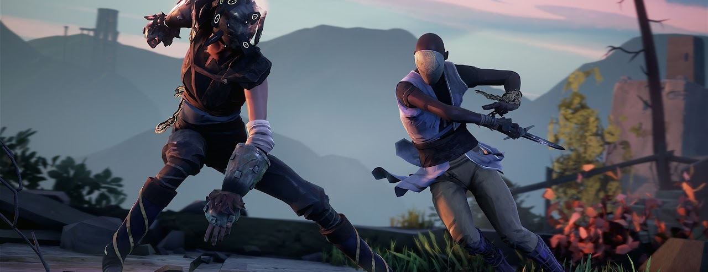

Кевин Роджер, родом из Перпиньяна, работает в области 3D-анимации уже 6 лет. Он изучал искусство и анимацию в Высшей школе искусств в Монпелье (Ecole Supérieure des Métiers Artistiques). Он всегда интересовался миром анимации, но его так-же интересовали видеоигры. «Было бы намного безопаснее, если бы я проводил общие исследования, совместимые с анимационными фильмами, видеоиграми и рекламой», - объясняет он.
По окончании четырехлетнего обучения он вместе с другими студентами снял короткометражный фильм "Короткий рассказ о лисе и мышке". Он был показан в кинотеатре перед жюри со всего мира, в которое входили представители крупных компаний. Успех, поскольку короткометражка была предварительно отобрана на премию «Оскар». Группа уехала в феврале 2016 года в Лос-Анджелес, чтобы представить свои работы. «Это был действительно крутой опыт», - вспоминает он.
Court-métrage: "Повесть о лисе и мышке", ESMA 2015
Кевину Роджеру всегда нравилась 3D-анимация. В этом смысле он приступает к новой настольной игре: Erune, изданной студией Arkada . Он сочетает в себе средневековую историю и современность. Erune - это исследовательская настольная игра. Мы погружаемся в мир средневекового фэнтези, руководствуясь современной технологией: искусственным интеллектом. Действительно, это голосовой помощник в приложении для телефона, который управляет квестами, головоломками и отвечает на ваши вопросы о правилах игры.

Сегодня он является ведущим аниматором в Sloclap, независимой студии видеоигр. "С детства я хотел работать над видеоиграми." - говорит он. Маленький человек, любивший там играть, очень быстро понял, что участвует в развитии этой "вселенной". Это сделано! В 2017 году появился Absolver. Это приключенческий боевик, в который можно играть онлайн. Он доступен на всех носителях: ПК и домашних консолях.

Absolver, первая игра от студии Sloclap.
Еще один проект приключенческой игры находится в стадии реализации. "В следующей игре мы уделим еще больше внимания достоверности и реализму. Мы хотели-бы отдать дань уважения боевым искусствам и старым фильмам о кунг-фу." Еще немного терпения, он должен быть выпущен в 2021 году.
Автор Людмила Клочер.